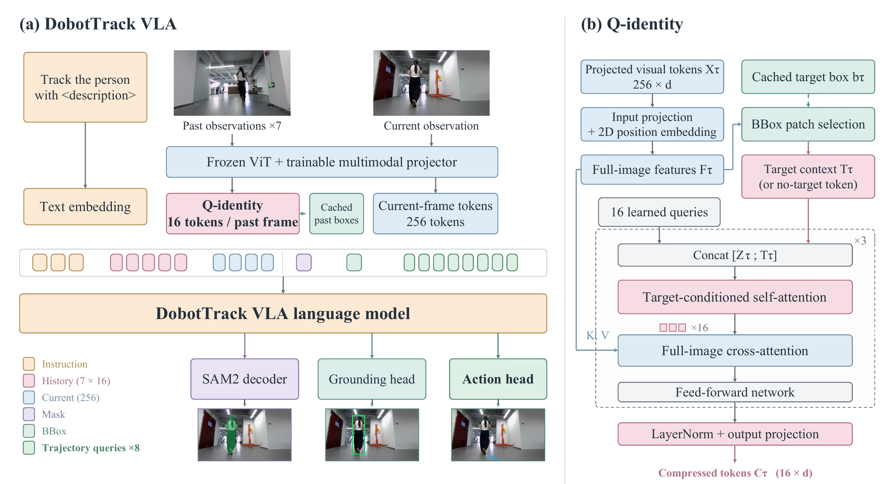
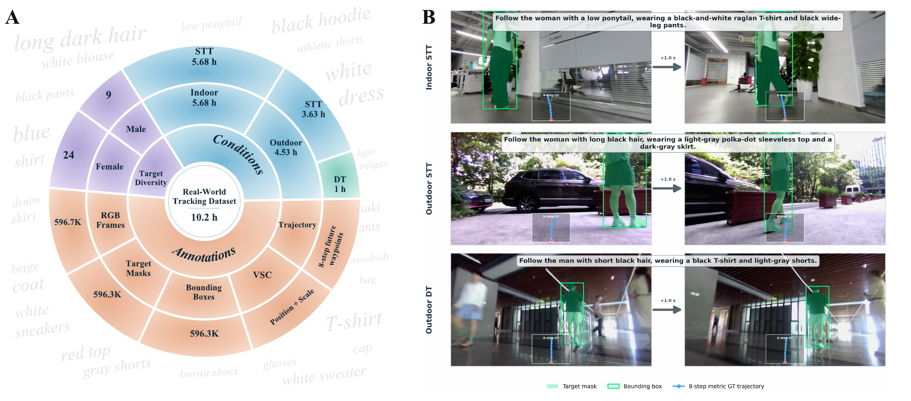

Abstract
Language-guided embodied person tracking requires a mobile agent to identify a target from a referring description and consistently follow the target under egocentric observations. We present DobotTrack, a target-grounded vision-language-action (VLA) framework that integrates auxiliary grounding supervision with efficient temporal modeling. We systematically investigate five auxiliary tasks—person segmentation, bounding-box grounding, visual-spatial classification (VSC), future DINO feature prediction, and future-frame prediction—and adopt complementary mask and bounding-box supervision to enhance target delineation and localization. We introduce Q-identity, a task-aware historical visual compression module that leverages target-grounding predictions to selectively preserve identity-discriminative appearance features and spatial cues in compact historical tokens. On EVT-Bench, our 0.8B-parameter model achieves an average success rate of 77.9%, exceeding OmTrackVLA by 16.9 percentage points across the three tasks. We further construct a real-world person-following dataset collected using a quadruped robot, comprising 126 episodes and 596,323 mask-annotated frames. The target masks enable automatic derivation of bounding boxes and visual-spatial labels encoding horizontal position and apparent image scale, providing additional grounding supervision without separate manual annotation of these labels. Together, our framework and annotation pipeline support learning target-grounded tracking policies from simulated and real-world data.
DobotTrack Overview
DobotTrack is a target-grounded VLA framework for language-guided person following. We systematically study auxiliary supervision and combine mask supervision for learning target representations with box supervision for spatial localization. Q-identity feeds past target-grounding predictions back into visual history compression, preserving target appearance and scene context in compact tokens for trajectory prediction. We also contribute a quadruped-collected dataset with 126 following episodes and 596,323 mask-annotated frames, together with derived boxes, spatial labels, and future waypoints for learning from simulated and real-world data.

From real recordings to training supervision
Real-world Tracking Dataset
Indoor and outdoor following, paired with target descriptions, dense annotations, and future robot motion.

10.2 hours126 following episodes
596,323 frameswith target-mask annotations
Indoor & outdoorcoverage across following scenes
Robot motion is collected through human teleoperation and an expert model. Target masks yield bounding boxes and structured visual-spatial labels. The examples above show dataset ground truth.
Simulation Experiments
Real-world Display
BibTeX
@article{deng2026dobottrack,
title={DobotTrack: Target-Grounded Vision-Language-Action Learning for Embodied Person Tracking},
author={Shengjun Deng and Yinghan Zhang and Chengrui Wei and Liu Liang and Songyuan Liu and Pengkun Zheng and Yajun Zheng and Ying Zhang and Yuan Tian and Xi Li and Teng Wang},
journal={arXiv preprint arXiv:2611.09041},
year={2026},
url={https://arxiv.org/abs/2611.09041}
}